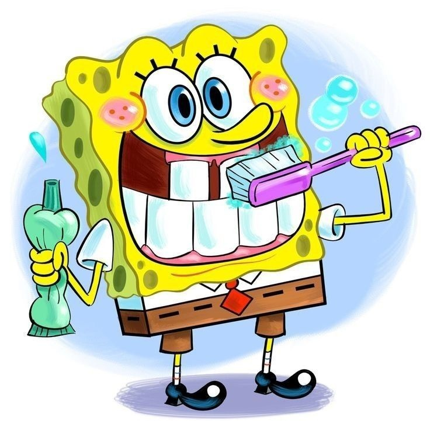
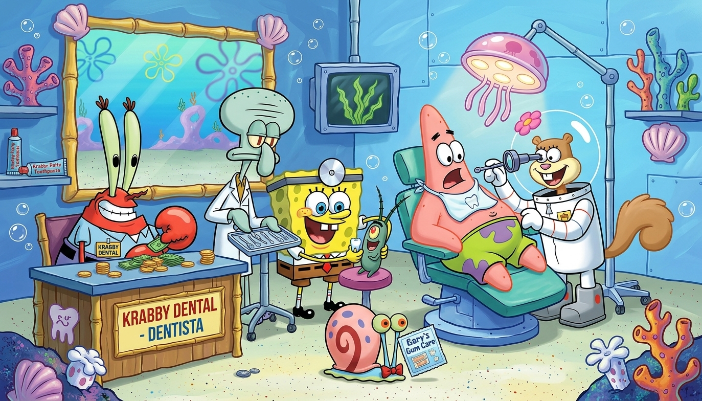

Saúde Bocal
Cuide do seu sorriso!
- A Saúde bucal é importante para manter dentes e as gengivas saudáveis.

A Importância da Saúde Bucal
- A saúde bucal é muito importante para manter os dentes e a gengiva saudáveis.
Para cuidar da boca, devemos escovar os dentes pelo menos três vezes ao dia, usar fio dental e visitar o dentista regularmente.
Também é importante evitar o excesso de doces e manter uma alimentação saudável. Esses cuidados ajudam
a prevenir cáries, mau hálito e outros problemas, mantendo um sorriso bonito e saudável.
